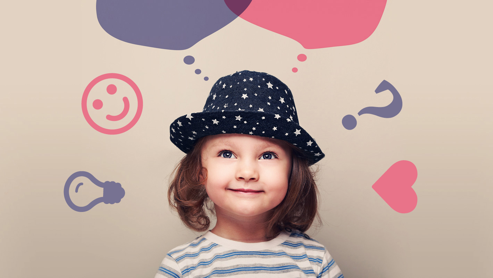

¿Quiénes somos?
Somos un emprendimiento familiar focalizado en la infancia, niñez y crianza; que busca dar herramientas a
través del juego hacia un tránsito saludable de las etapas iniciales del desarrollo.
Diseñamos y fabricamos juguetes en madera, con el mismo objetivo de favorecer con cada propuesta, el
paso armónico y saludable por esta etapa del desarrollo, potenciando siempre sus recursos y
posibilidades.
Trabajamos con maderas nobles y pinturas no tóxicas aptas para bebés.